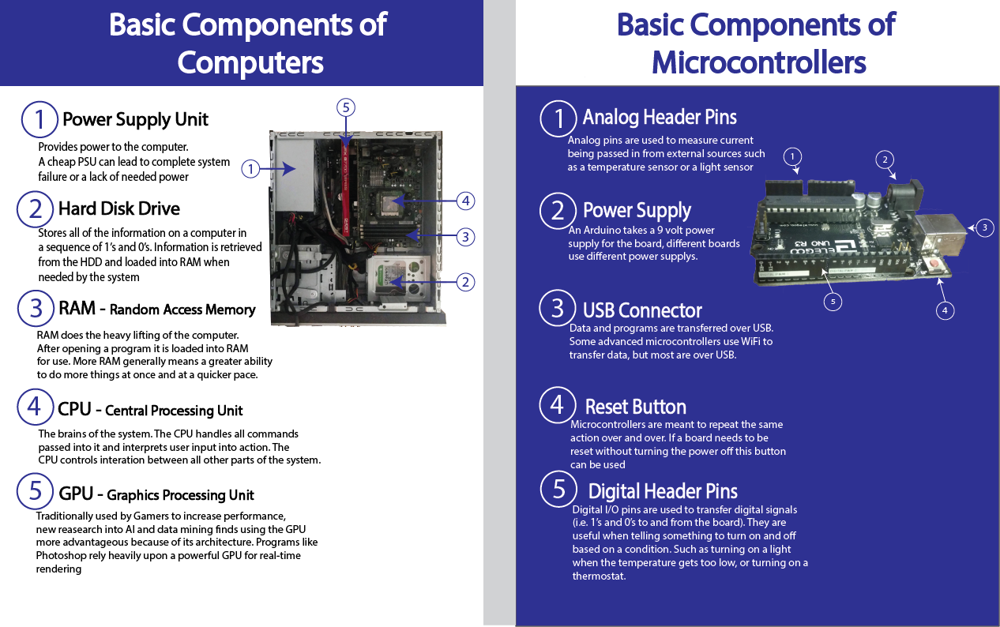

Fundamental Components of Computers
Learning Objective
By viewing this graphic, the goal is for you to be able to know and understand the fundamental components of computers and micro-controllers, however the focus will be on computers.
Instructions
Please review the following images and take notes on their components. You will see this image referenced in other places during this lesson
 Download Original - 320KB